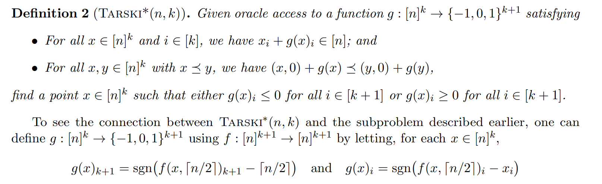
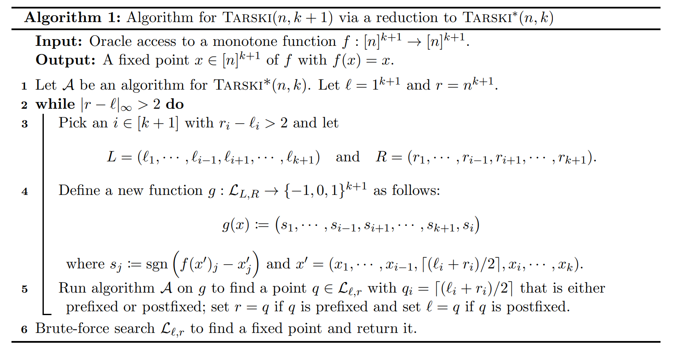
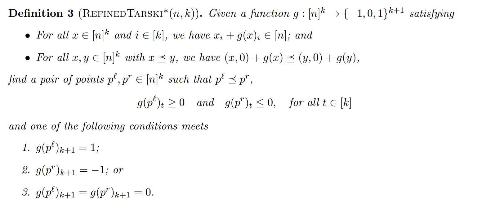
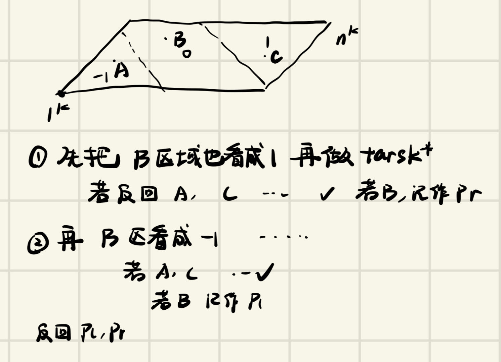
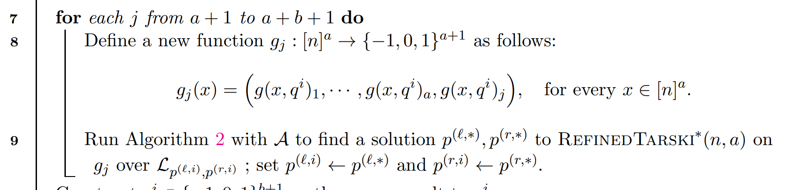
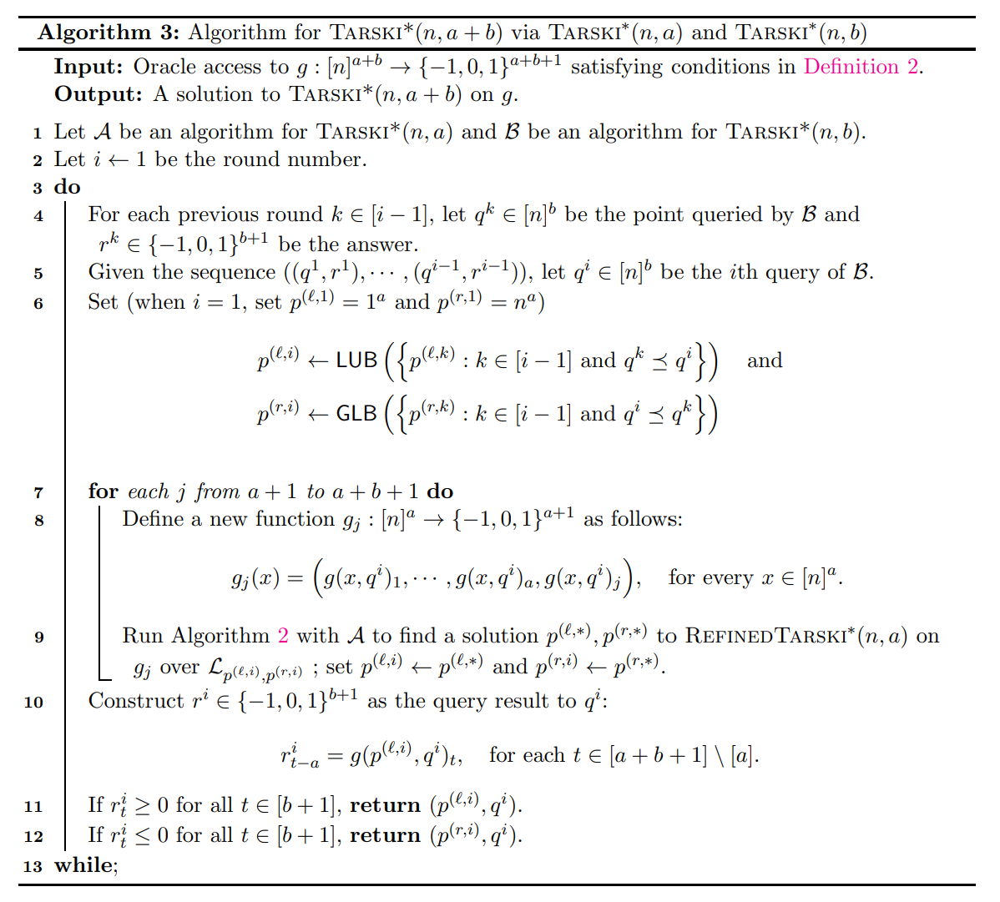

Tarski upper bound 导读
作者应该是俩中国人
Tarski定理
对于完全格 $<L,\preceq>$,以及$L \to L$的单调增函数$f$，$f$一定存在不动点
有点像格上的介值定理
文章贡献
对于n阶k维格点格(grid lattice),以及定义在其上的单调函数$f$,构造出了一个$O(\log^{\lceil \frac{k+1}{2} \rceil}n)$算法找到一个不动点。
后文假设我们的目标是解决$Tarski(n,k+1)$
Step1 Reduce to $Tarski*(n,k)$
我们可以单独考虑某一个维度，先固定这个维度的值（也就是说取在这个格中取出一个切片）我们尝试在这个切面上找到一个prefix或者suffix。(前驱或者后继是一定存在的，因为只考虑这个切面($k$维)上，一定存在不动点，这个点肯定是一个前驱或后继),很显然哉suffix到$[n]^{k+1}$之间（或$[1]^{k+1}$到prefix之间）一定有不动点，于是第$k+1$维减半。
prefix: 指一个点$x$满足$f(x) \preceq x$
suffix:指一个点$x$满足$x \preceq f(x)$
$Tarski*(n,k)$

Reduction

问题转变为求解$Tarski*(n,k)$
$Refined Tarski*(n,k)$

求解

求解 $Tarski*(n,a+b)$
现在的目标是，假设我们能求解$Tarski*(n,a),Tarski*(n,b)$如何求解$Tarski*(n,a+b)$
一个很自然的想法是，对于$[a+1,a+b]$维，我们直接枚举它们的值（假设枚举了$q_i$）然后我们执行如下算法:

此时我们会发现，在前$a$维的切面上，$p^{(l,i)},p^{(r,i)}$之间的点，这些点的$g(x)$在$a+1$维之后都相等(由于Refined Tarski*的作用),前$a$维肯定非负或非正，因此，如果我们能保证$[a+1,a+b+1]$维也非负/非正，那么就做完了。
如何保证呢，我们发现实际上这可以转化成一个求解$Tarski(n,b)$的过程,如果我们可以保证对$q_i$的回复满足 Definition2，那么最终就能找到一组非正或非负的回复。

在这里，每次询问$q_i$时，我们都会找到之前的询问记录，保证下界要比以前的大，上界要比以前的小，这样的回复一定是可以满足Definition2的（因为$(q_i,0)+g(p^{(l,i)},q_i)$关于$q_i$单调）。因此，假设$Tarski*(n,a)$复杂度是$q(n,a)$,$Tarski*(n,b)$复杂度是$q(n,b)$，那么我们在$O((b+1)q(n,a)q(n,b))$内完成了$Tarski*(n,a+b)$
最后
由于$Tarski*(n,2)$可以在$O(\log n)$内完成，因此$Tarski*(n,k)$可以在$O(\log^{k/2}n)$完成,进而证明了Tarski(n,k)的复杂度